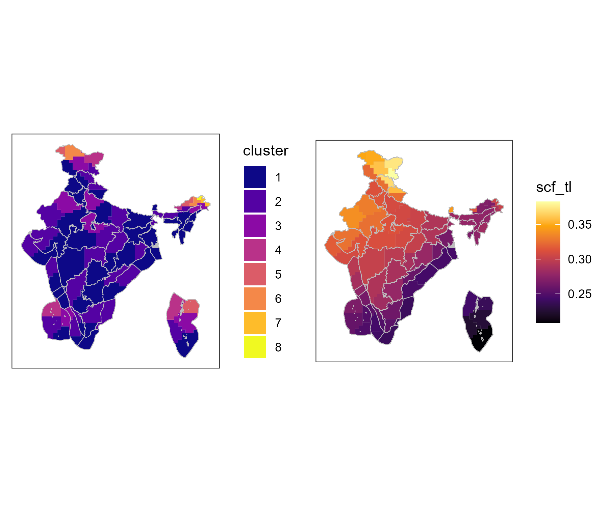
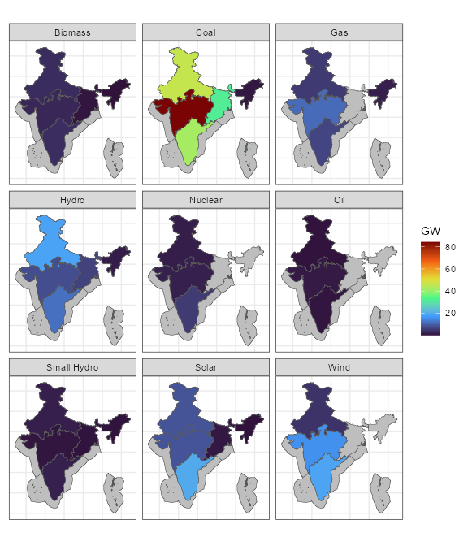

Configuration
# Set number of regions, currently '7' is the only option
nreg <- 7
offshore <- FALSE # should offshore regions be included
islands <- FALSE # should islands be included (defines 5 or 7 regions)
base_year <- 2020 # the first year of the model (base year or `BY`)
# region variable name to use in functions (e.g. `get_ideea_data`)
regN <- paste0("reg", nreg)
regN_off <- paste0(regN, "_off")
library(tidyverse)
library(data.table)
library(sf)
library(glue)
library(data.table)
library(here)
# if IDEEA is installed, uncomment this line to load IDEEA
library(IDEEA)
# if running from the IDEEA folder without installation
# devtools::load_all(".")
stopifnot(packageVersion("IDEEA") >= '0.0.09')
set_progress_bar()
# show_progress_bar(F)
# See `/dev/settings.R` to configure your system
if (file.exists("~/.ideea/settings.R")) source("~/.ideea/settings.R")Regions
gis_sf <- get_ideea_map(nreg, offshore = T, reg_off = T)
plot(gis_sf["reg_off"], key.width = lcm(4))
Time resolution
Sub-annual time resolution is set via the calendar
object, that specifies levels of nested time-frames (such as ‘ANNUAL’,
‘MONTH’, ‘DAY’, ‘HOUR’, etc. depending on the modeling goals and decided
level of details). This structure of modeled sub-annual time resolution
is assigned by a timetable data.frame with columns named as
used time-frames, as well as ‘slice’ (refers to the lowest level of
‘time-slices’ with unique names, e.g. ‘d001_h15’ indicating the 1st day
of the year and the 15th hour of the day), the ‘share’ column (for the
share of the time-frame in the year), and ‘weight’ (for the weight of
the time-frame in the year, used in sampled calendars).
ideea_modules$time_tables$d365_h24
#> ANNUAL YDAY HOUR slice share weight
#> <char> <char> <char> <char> <num> <num>
#> 1: ANNUAL d001 h00 d001_h00 0.0001141553 1
#> 2: ANNUAL d001 h01 d001_h01 0.0001141553 1
#> 3: ANNUAL d001 h02 d001_h02 0.0001141553 1
#> 4: ANNUAL d001 h03 d001_h03 0.0001141553 1
#> 5: ANNUAL d001 h04 d001_h04 0.0001141553 1
#> ---
#> 8756: ANNUAL d365 h19 d365_h19 0.0001141553 1
#> 8757: ANNUAL d365 h20 d365_h20 0.0001141553 1
#> 8758: ANNUAL d365 h21 d365_h21 0.0001141553 1
#> 8759: ANNUAL d365 h22 d365_h22 0.0001141553 1
#> 8760: ANNUAL d365 h23 d365_h23 0.0001141553 1This time-table is to define a calendar object, that
also describes the ierarchy of time-frames and sets the sequence of the
time-slices.
timetable_full_year <- ideea_modules$time_tables$d365_h24
full_calendar_d365_h24 <- newCalendar(timetable = timetable_full_year)The model object (described below) must have the
calendar object with all time-frames and time-slices used
in the model. However, scenarios can be solved for a subset of the
time-slices, defined by another calendar object with
sub-set of time-slices. Here we define a calendar with a subset of 1 day
per month and 24 hours per each day. Therefore, the total number of
time-slices in the subset is 12 days * 24 hours = 288 time-slices
(vs. 8760 time-slices in the full calendar).
# pick days
yday_sample <- cumsum(lubridate::days_in_month(1:12)) - 16 # one day per month
# pick hours
hour_sample <- 0:23 # all 24 hours
timetable_subset <- timetable_full_year |>
filter(YDAY %in% yday2YDAY(yday_sample)) |>
filter(HOUR %in% hour2HOUR(hour_sample))
timetable_subset
#> ANNUAL YDAY HOUR slice share weight
#> <char> <char> <char> <char> <num> <num>
#> 1: ANNUAL d015 h00 d015_h00 0.0001141553 1
#> 2: ANNUAL d015 h01 d015_h01 0.0001141553 1
#> 3: ANNUAL d015 h02 d015_h02 0.0001141553 1
#> 4: ANNUAL d015 h03 d015_h03 0.0001141553 1
#> 5: ANNUAL d015 h04 d015_h04 0.0001141553 1
#> ---
#> 284: ANNUAL d349 h19 d349_h19 0.0001141553 1
#> 285: ANNUAL d349 h20 d349_h20 0.0001141553 1
#> 286: ANNUAL d349 h21 d349_h21 0.0001141553 1
#> 287: ANNUAL d349 h22 d349_h22 0.0001141553 1
#> 288: ANNUAL d349 h23 d349_h23 0.0001141553 1
unique(timetable_subset$HOUR)
#> [1] "h00" "h01" "h02" "h03" "h04" "h05" "h06" "h07" "h08" "h09" "h10" "h11"
#> [13] "h12" "h13" "h14" "h15" "h16" "h17" "h18" "h19" "h20" "h21" "h22" "h23"
unique(timetable_subset$YDAY)
#> [1] "d015" "d043" "d074" "d104" "d135" "d165" "d196" "d227" "d257" "d288"
#> [11] "d318" "d349"
SUBSET_HOURS <- nrow(timetable_subset) # total hours in the subset
FRACT_YEAR <- SUBSET_HOURS / 8760 # fraction in a year
print("Subannual time resolution:")
#> [1] "Subannual time resolution:"
print(paste(" Total number of days a year:", length(yday_sample)))
#> [1] " Total number of days a year: 12"
print(paste(" Total number of hours per year:", SUBSET_HOURS))
#> [1] " Total number of hours per year: 288"
# Partial calendar
partial_calendar <- newCalendar(
timetable = timetable_subset,
year_fraction = sum(timetable_subset$share)
)Commodities
Commodities are the main objects of the model, representing the goods
and services that are traded in the model. Commodities can be energy
carriers (e.g. electricity, coal, oil, gas, biomass), emissions
(e.g. CO2, NOx, SOx, PM), or other goods and services. Commodities are
defined by their name, description, unit of measure, and time-frame by
the newCommodity function. Some of the commodity-objects
are pre-built in the energy module, and can be loaded from
there. Commodities specific to the electricity model are defined below.
Important features of commodities are their time-frame, and the limit
type (slot @limtype) that defines the balance equation for
the commodity. By default the limit type is set to “LO” (lower bound)
meaning that excess of commodity is allowed, but the deficit is not.
Other options are “UP” (upper bound) and “FX” (equality).
# energy
ELC <- newCommodity(
name = "ELC",
desc = "Electricity",
unit = "GWh",
timeframe = "HOUR"
)
# emissions
CO2 <- newCommodity(
name = "CO2",
desc = "Carbon emissions",
unit = "kt",
timeframe = "ANNUAL"
)
NOX <- newCommodity(
name = "NOX",
desc = "Nitrogen oxide emissions NOx",
unit = "kt",
timeframe = "ANNUAL"
)
SOX <- newCommodity(
name = "SOX",
desc = "Sulfur oxide emissions SOx",
unit = "kt",
timeframe = "ANNUAL"
)
PM <- newCommodity(
name = "PM",
desc = "Particulate matter (particle pollution)",
unit = "kt",
timeframe = "ANNUAL"
)
REN <- newCommodity(
name = "REN",
desc = "Generic renewable energy",
unit = "GWh",
timeframe = "ANNUAL"
)
# storing all commodities in a repository
repo_comm <- newRepository(
name = "repo_comm",
desc = "Electricity & emissions commodities"
) |>
add(ELC, CO2, NOX, SOX, PM)Demand options
For the electricity-only model, the electricity is considered as the
final product, and the final demand can be set exogenously via the
demand class. The newDemand function creates
an object of class demand with detailed representation of
the demanded electricity by region, time-slice, and year. The values of
demand without information on the parameter dimension, such as the
region, time-slice, or year are considered default for the non-specified
dimensions, and will be filled-in on the interpolation step of the model
along with the missing years. Therefore it is enough to set values for
the base-year and the last year, if the demand is expected to grow
linearly. The load curve by region in India for 2019 is stored in the
load_2019_MWh dataset, and used in this example as the
base-year demand, extrapolated through the model’s horizon.
# call the load curve by region in 2019 from IDDEA datasets
load_BY <- get_ideea_data("load_2019_MWh", nreg = 7, variable = "MWh") |>
mutate(GWh = MWh / 1e3)
# rename(region = {{regN}})
# define `demand` object with the historical load curve
DEMELC_BY <- newDemand(
name = "DEMELC_BY",
desc = "Houlry electric demand by region, base-year level",
commodity = "ELC",
unit = ELC@unit,
dem = data.frame(
region = load_BY$region,
# year = load_BY$year, # assign to all years
slice = load_BY$slice,
dem = load_BY$GWh # * dem_adj
)
)The demand growth is set by another demand-object with linear growth of the demand in every region, time-slice from zero to 2x the base-year level by 2050, and 3x by 2070. If the model horizon is longer, the demand can be extrapolated further.
# define demand in several years, e.g. 2020, 2050, 2070,
# which will be interpolated before solving the model ('interpolation' step)
load_2x_2050 <-
rbind(
mutate(load_BY, year = 2020, GWh = 0.0 * GWh),
mutate(load_BY, year = 2050, GWh = 2 * GWh),
mutate(load_BY, year = 2070, GWh = 3 * GWh)
) |>
as.data.table()
load_BY
#> region slice datetime MONTH YDAY HOUR MWh GWh
#> <char> <char> <POSc> <int> <int> <int> <num> <num>
#> 1: EAST d001_h00 2019-01-01 00:00:00 1 1 0 10833 10.833
#> 2: EAST d001_h01 2019-01-01 01:00:00 1 1 1 10214 10.214
#> 3: EAST d001_h02 2019-01-01 02:00:00 1 1 2 9974 9.974
#> 4: EAST d001_h03 2019-01-01 03:00:00 1 1 3 9808 9.808
#> 5: EAST d001_h04 2019-01-01 04:00:00 1 1 4 9684 9.684
#> ---
#> 43796: WEST d365_h19 2019-12-31 19:00:00 12 365 19 44449 44.449
#> 43797: WEST d365_h20 2019-12-31 20:00:00 12 365 20 41124 41.124
#> 43798: WEST d365_h21 2019-12-31 21:00:00 12 365 21 38602 38.602
#> 43799: WEST d365_h22 2019-12-31 22:00:00 12 365 22 36833 36.833
#> 43800: WEST d365_h23 2019-12-31 23:00:00 12 365 23 36831 36.831
# define the second demand object with the load growth
DEMELC_2X <- newDemand(
name = "DEMELC_2X",
desc = "Additional demand growth, proportional to the current load",
commodity = "ELC",
unit = ELC@unit,
dem = data.frame(
region = load_2x_2050$region,
year = load_2x_2050$year,
slice = load_2x_2050$slice, # comment to assign to all hours
dem = load_2x_2050$GWh # * dem_adj
)
)Alternative demand-objects can be created and added to the model
before interpolation/solution to represent different scenarios or policy
options.
Another ways to set the demand in the model also available. For example,
export objects define the potential external demand with
levels and also the price of the electricity. If other sectors are
modeled, they can also set the demand for electricity,
e.g. transport or industry modules.
Supply & resources
While demand objects set the final demand commodity (ELC
in this example), the supply objects define the sources of primary
commodities (e.g. coal, gas, oil, biomass, nuclear, renewable energy
sources) that are used in the production of the final or interim
products. The resources used in the electricity model has been already
defined in the energy module, and can be loaded from there.
Another way to introduce a supply of a commodity to the model is
import from another region or from outside the model
regions (“The Rest of the World”, ROW). For every tradable energy
commodity we defined the import with higher than domestic
supply price to ensure that the domestic supply is used first and extend
the availability of the commodities’ supply beyond the domestic
resources – essencial for long-term planning.
Primary energy
# define repository for energy supply and resources
repo_supply <- newRepository(
name = "repo_supply",
desc = "Energy supply (markets)"
) |>
add( # import objects from energy module
# coal
ideea_modules$energy$COA, # coal commodity
ideea_modules$energy$SUP_COA, # coal domestic supply
ideea_modules$energy$IMP_COA, # coal import
# natural gas
ideea_modules$energy$GAS, # natural gas commodity
ideea_modules$energy$SUP_GAS, # natural gas domestic supply
ideea_modules$energy$IMP_GAS, # natural gas import
# oil
ideea_modules$energy$OIL, # oil commodity
ideea_modules$energy$SUP_OIL, # oil domestic supply by region
ideea_modules$energy$IMP_OIL, # oil import
# biomass
ideea_modules$energy$BIO, # biomass commodity
ideea_modules$energy$RES_BIO, # domestic resource of biomass
# nuclear
ideea_modules$energy$NUC, # nuclear fuel commodity
ideea_modules$energy$IMP_NUC, # Nuclear fuel international market
#
REN, # all type of non-fuel (renewable) energy
newSupply(
name = "RES_REN",
commodity = "REN",
desc = "An artificial commodity to represent all renewable energy resources"
),
overwrite = F
)
summary(repo_supply)
#> commodity import supply
#> 6 4 5
names(repo_supply)
#> [1] "COA" "SUP_COA" "IMP_COA" "GAS" "SUP_GAS" "IMP_GAS" "OIL"
#> [8] "SUP_OIL" "IMP_OIL" "BIO" "RES_BIO" "NUC" "IMP_NUC" "REN"
#> [15] "RES_REN"Carbon storage
The geological potential for carbon storage by region is defined in
CCUS document, stored in IDEEA modules.
# from ideea_modules
repo_geoccs <- newRepository(
name = "repo_ccs",
desc = "Carbon storage geo-potential",
ideea_modules$CCUS$CO2SINK, # commodity to represent stored CO2
ideea_modules$CCUS$RES_CO2SINK # domestic resource of CO2 storage
)
summary(repo_geoccs)
#> commodity supply
#> 1 1Capacity factors
The availability of renewable energy sources (solar, wind, hydro) is
defined by the capacity factors (CF) that represent the share of the
potential energy that can be harvested in a given time-frame per unit of
a generator capacity. The capacity factors are defined by the
weather objects with the time-frame of the weather data
(e.g. “HOUR” for hourly data, “YDAY” for daily data). The weather data
can be obtained from the external sources (e.g. NREL, MERRA2, ERA5),
some are saved in the IDEEA datasets. The capacity factors can be
defined for the whole region, or for the specific locations.
Solar
This example implements the solar capacity factors for the regions of
India, based on the MERRA2 dataset. The capacity factors are defined for
the tilted tracking system (tl), estimated with
merra2ools package.
merra_solar <- ideea_data$merra_solar_cf_reg7 |>
rename(region = reg7_off) |>
filter(region %in% gis_sf$region)
WSOL <- newWeather(
name = "WSOL",
desc = "Solar capacity factors, tilted tracking system (tl)",
region = unique(merra_solar$region),
timeframe = "HOUR",
weather = data.frame(
region = merra_solar$region,
slice = merra_solar$slice,
# year = NA # all years
wval = merra_solar$scf_tl
)
)Wind
The wind capacity factors are defined for the regions of India, based
on the MERRA2 dataset. The capacity factors are estimated for the 100m
height (wcf100m) with merra2ools package, the
data for 7 regions is saved in ideea_data.
merra_wind <- ideea_data$merra_wind_cf_reg7 |>
rename(region = reg7_off) |>
filter(region %in% gis_sf$region)
WWIN <- newWeather(
name = "WWIN",
desc = "Onshore wind 100m height",
region = unique(merra_wind$region),
timeframe = "HOUR",
weather = data.frame(
region = merra_wind$region,
slice = merra_wind$slice,
# year = NA # same for all years
wval = merra_wind$wcf100m
)
)Hydro
The hydro capacity factors are based on the official hourly data for India in 2013. This simplification is used to demonstrate the model’s capabilities and can be replaced with more detailed data if available.
WHYD <- newWeather(
name = "WHYD",
desc = "Hydro CUF",
# region = c(unique(merra_wind$region),"NORTHEAST"),
timeframe = "HOUR",
weather = data.frame(
# region = NA, # same for all regions
slice = timeslices::dtm2tsl(ideea_data$hydro_hourly_cf_2013$datetime),
# year = NA # same for all years
wval = ideea_data$hydro_hourly_cf_2013$cf
)
)Generating technologies
The pre-existing capacity of power generation can be defined as
groups of technologies, aggregated by the primary fuel type and other
technological features, such as the efficiency, the costs, the lifetime,
emissions, etc. In this example we use open-source datasets from WRI
with some up-to-date corrections to represent the existing capacity of
the power plants in India by the model regions and primary fuels. While
the capacity is taken from the open WRI dataset, the technology
parameters are collected by the IDEEA group, and have been used to
define technology objects in the techs module
(ideea_modules$techs).
cap_0 <- get_ideea_data(
name = "generators_wri",
# sets = ,
variable = c("primary_fuel", "capacity_mw"),
nreg = nreg, offshore = F, islands = T) |>
filter(capacity_mw > 0)
cap_1 <- get_ideea_data(
name = "generators_2020",
# nreg = 36,
nreg = nreg,
variable = c("Solar", "Wind", "Biomass", "Small Hydro"),
# offshore = T, # not working properly - bug
islands = T)
cap <- bind_rows(
filter(cap_0, !grepl("Solar|Wind|Biomass", primary_fuel)),
pivot_longer(
cap_1,
cols = any_of(c("Solar", "Wind", "Biomass", "Small Hydro")),
names_to = "primary_fuel",
values_to = "capacity_mw"
)
) |>
mutate(offshore = FALSE, .after = "capacity_mw") |>
as.data.table()
cap_sf <- gis_sf |>
right_join(cap) |>
filter(!is.na(primary_fuel), capacity_mw > 10)
#> Joining with `by = join_by(region, offshore)`
a <- ggplot() +
geom_sf(data = gis_sf, fill = "grey") +
geom_sf(aes(fill = capacity_mw / 1e3), data = cap_sf) +
scale_fill_viridis_c(option = "H", name = "GW", trans = "identity") +
facet_wrap(~primary_fuel) +
theme_bw() +
theme(
# panel.background = element_rect(fill = "aliceblue"),
# panel.grid = element_line(color = "white", size = 0.8),
axis.ticks = element_blank(),
axis.text = element_blank()
)
# a
ggsave("tmp/installed_capacity.png", a,
width = 6, height = 7,
scale = 1.25
)
try(a)
cap$primary_fuel |> unique()
#> [1] "Hydro" "Coal" "Gas" "Nuclear" "Oil"
#> [6] "Solar" "Wind" "Biomass" "Small Hydro"Coal-fired
There are several generations of coal-fired power plants, from
sub-critical to supercritical, and ultra-supercritical, with different
efficiencies, costs, and emissions. The existing capacity (stock) of
coal-fired power plants in this example is assumed to be represented by
the ECOASUP technology with average efficiency, which will
linearly retire by 2040. More advanced technologies
(ECOAULT) by vintages (2020, 2030, 2040, 2050) are
available for investment. The technology with carbon capture is defined
the the CCS section below.
# Existing capacity
cap_coa <- cap |>
filter(grepl("Coal", primary_fuel)) |>
filter(!offshore) |>
mutate(year = 2020, .before = 1)
# assume retirement of 2020 capacity by 2030
cap_coa_2030 <- cap_coa |>
mutate(year = 2030, capacity_mw = 0.8 * capacity_mw)
# assume retirement of 2020 capacity by 2030
cap_coa_2040 <- cap_coa |>
mutate(year = 2040, capacity_mw = 0.1 * capacity_mw)
# combine
cap_coa <- cap_coa |>
bind_rows(cap_coa_2030) |>
bind_rows(cap_coa_2040)
# Note: the existing capacity will be linearly interpolated from 2020 to 2040
# cap = 0 after 2040
# load coal technology (assume Super-critical for all existing capacity)
ECOASUP_2020 <- ideea_modules$techs$ECOASUP@data$ECOASUP_2020
class(ECOASUP_2020)
#> [1] "technology"
#> attr(,"package")
#> [1] "energyRt"
# update base-year technology with preexisting capacity
ECOASUP_2020 <- ECOASUP_2020 |>
update(capacity = data.frame(
region = cap_coa$region,
year = cap_coa$year,
stock = cap_coa$capacity_mw / 1e3 # in GW
))
# load most advanced coal techs for new investment
ECOA <- ideea_modules$techs$ECOAULT |> # ultra-super-critical
# add(ideea_modules$techs$ECOASUP$ECOASUP_2030) |>
add(ECOASUP_2020) # add tech with existing capacity
names(ECOA@data)
#> [1] "ECOAULT_2020" "ECOAULT_2030" "ECOAULT_2040" "ECOAULT_2050" "ECOASUP_2020"
draw(ECOA@data$ECOASUP_2020)
draw(ECOA@data$ECOAULT_2050)Natural gas
There are two key natural gas fired technologies in the model: the
combined cycle gas turbine (CCGT) and the open cycle gas turbine (OCGT).
The existing capacity of gas-fired power plants in this example is
assumed to be represented by the CCGT (ENGCC) technology,
which will linearly retire by 2040. The OCGT technology
(ENGOC) and more advanced vintages of NGCC are available
for investment. The technology with carbon capture is defined the the
CCS section below.
cap_gas <- cap |>
filter(grepl("Gas", primary_fuel)) |>
filter(!offshore) |>
mutate(year = 2020, .before = 1)
# assume retirement of 2020 capacity by 2030
cap_gas_2030 <- cap_gas |>
mutate(year = 2030, capacity_mw = 0.8 * capacity_mw)
# assume retirement of 2020 capacity by 2030
cap_gas_2040 <- cap_gas |>
mutate(year = 2040, capacity_mw = 0.1 * capacity_mw)
# combine
cap_gas <- cap_gas |>
bind_rows(cap_gas_2030) |>
bind_rows(cap_gas_2040)
# Note: the existing capacity will be linearly interpolated from 2020 to 2040
# cap = 0 after 2040
# load coal technology (assume Super-critical for all existing capacity)
ENGCC_2020 <- ideea_modules$techs$ENGCC@data$ENGCC_2020
# update base-year technology with preexisting capacity
ENGCC_2020 <- ENGCC_2020 |>
update(capacity = data.frame(
region = cap_gas$region,
year = cap_gas$year,
stock = cap_gas$capacity_mw / 1e3 # in GW
))
# load most advanced coal techs for new investment
EGAS <- ideea_modules$techs$ENGCC |> # Combined cycle gas turbine
add(ENGCC_2020, overwrite = T) |> # technology with pre-existing capacity
add(ideea_modules$techs$ENGOC) # open cycle gas turbine
names(EGAS@data)
#> [1] "ENGCC_2020" "ENGCC_2030" "ENGCC_2040" "ENGCC_2050" "ENGOC_2020"
#> [6] "ENGOC_2030" "ENGOC_2040" "ENGOC_2050"
draw(EGAS@data$ENGCC_2020)
# draw(EGAS@data$ENGCC_2050)Solar
The solar technologies are defined for the base-year of the model with pre-existing capacity from WRI datasets; the new technologies available for investment are represented by several vintages of solar PV technologies up to 2050.
# solar capacity in ~2020
cap_sol <- cap |>
filter(grepl("Solar", primary_fuel)) |>
mutate(year = 2020, .before = 1)
# assume retirement of 2020 capacity by 2030
cap_sol_2030 <- cap_sol |>
mutate(year = 2030, capacity_mw = 0.8 * capacity_mw)
# assume further retirement by 2040
cap_sol_2040 <- cap_sol |>
mutate(year = 2040, capacity_mw = 0.1 * capacity_mw)
# combine
cap_sol <- cap_sol |>
bind_rows(cap_sol_2030) |>
bind_rows(cap_sol_2040)
# Note: the existing capacity will be linearly interpolated from 2020 to 2040
# cap = 0 after 2040
# load repository with solar technologies
ESOL <- ideea_modules$techs$ESOL
class(ESOL) # repository with solar techs
#> [1] "repository"
#> attr(,"package")
#> [1] "energyRt"
names(ESOL@data)
#> [1] "ESOL_2020" "ESOL_2030" "ESOL_2040" "ESOL_2050"
# update base-year technology with preexisting capacity
ESOL@data$ESOL_2020 <- ESOL@data$ESOL_2020 |>
update(capacity = data.frame(
region = cap_sol$region,
year = cap_sol$year,
stock = cap_sol$capacity_mw / 1e3 # in GW
))
# add weather factor name and parameter for each technology
ESOL@data <- lapply(ESOL@data, function(tech) {
update(
tech,
weather = data.frame(weather = "WSOL", waf.fx = 1),
input = list(comm = "REN", combustion = 0)
)
})
names(ESOL@data)
#> [1] "ESOL_2020" "ESOL_2030" "ESOL_2040" "ESOL_2050"
ESOL@data$ESOL_2020@weather
#> weather comm wafc.lo wafc.up wafc.fx waf.lo waf.up waf.fx wafs.lo wafs.up
#> 1 WSOL <NA> NA NA NA NA NA 1 NA NA
#> wafs.fx
#> 1 NA
ESOL@data$ESOL_2020 |> draw()
Wind
Similarly, the wind technologies are defined for the base-year of the model with pre-existing capacity from WRI datasets; the new technologies available for investment are represented by vintages.
# existing capacity
cap_win <- cap |>
filter(grepl("Wind", primary_fuel)) |>
mutate(year = 2020, .before = 1)
# correcting the 2020 base year capacity values for wind.
# assume retirement of 2020 capacity by 2030
cap_win_2030 <- cap_win |>
mutate(year = 2030, capacity_mw = 0.8 * capacity_mw)
# assume further retirement by 2040
cap_win_2040 <- cap_win |>
mutate(year = 2040, capacity_mw = 0.1 * capacity_mw)
# combine
cap_win <- cap_win |>
bind_rows(cap_win_2030) |>
bind_rows(cap_win_2040)
# Note: the existing capacity will be linearly interpolated from 2020 to 2040
# cap = 0 after 2040
# load repository with wind technologies
EWIN <- ideea_modules$techs$EWIN
class(EWIN) # repository with wind techs
#> [1] "repository"
#> attr(,"package")
#> [1] "energyRt"
names(EWIN@data)
#> [1] "EWIN_2020" "EWIN_2030" "EWIN_2040" "EWIN_2050"
# update base-year technology with preexisting capacity
EWIN@data$EWIN_2020 <- EWIN@data$EWIN_2020 |>
update(capacity = data.frame(
region = cap_win$region,
year = cap_win$year,
stock = cap_win$capacity_mw / 1e3 # in GW
))
# add weather factor name and parameter for each technology
EWIN@data <- lapply(EWIN@data, function(tech) {
update(
tech,
weather = data.frame(weather = "WWIN", waf.fx = 1),
input = list(comm = "REN", combustion = 0)
)
})
names(EWIN@data)
#> [1] "EWIN_2020" "EWIN_2030" "EWIN_2040" "EWIN_2050"
EWIN@data$EWIN_2020@weather
#> weather comm wafc.lo wafc.up wafc.fx waf.lo waf.up waf.fx wafs.lo wafs.up
#> 1 WWIN <NA> NA NA NA NA NA 1 NA NA
#> wafs.fx
#> 1 NA
EWIN@data$EWIN_2020 |> draw()
Hydro
The decision on development of hydro-power plants normally goes beyond the optimization of costs, and takes into account the environmental and social impacts, as well as the availability of the water resources. The development of hydro-power may take a decade, and the operational lifetime can go beyond a century. Here we assume that the existing capacity of hydro-power plants do not retire (until 2100), the new investments are not available, such projects can be added to the model as a separate scenario.
cap_hyd <- cap |>
filter(grepl("Hydro", primary_fuel)) |>
mutate(primary_fuel = "Hydro") |> # combining Small with other - assumption (!)
# filter(!offshore) |>
group_by(region, primary_fuel) |>
summarise(capacity_mw = sum(capacity_mw, na.rm = T), .groups = "drop") |>
filter(capacity_mw > 0) |>
mutate(year = 2020, .before = 1)
# assume retirement of 2020 capacity by 2030
cap_hyd_2030 <- cap_hyd |>
mutate(year = 2030, capacity_mw = 1 * capacity_mw)
# assume retirement of 2020 capacity by 2030
cap_hyd_2100 <- cap_hyd |>
mutate(year = 2100, capacity_mw = 1 * capacity_mw)
# combine
cap_hyd <- cap_hyd |>
bind_rows(cap_hyd_2030) |>
bind_rows(cap_hyd_2100)
# Note: the existing capacity will be linearly interpolated from 2020 to 2040
# cap = 0 after 2040
# load base-year technology
EHYD_2020 <- ideea_modules$techs$EHYD@data$EHYD_2020
class(EHYD_2020)
#> [1] "technology"
#> attr(,"package")
#> [1] "energyRt"
# update base-year technology with preexisting capacity
EHYD_2020 <- EHYD_2020 |>
update(
capacity = data.frame(
region = cap_hyd$region,
year = cap_hyd$year,
stock = cap_hyd$capacity_mw / 1e3 # in GW
),
end = list(end = 2010) # not available for investment
)
EHYD <- ideea_modules$techs$EHYD |> #
add(EHYD_2020, overwrite = T) # add tech with existing capacity
names(EHYD@data)
#> [1] "EHYD_2020" "EHYD_2030" "EHYD_2040" "EHYD_2050"
#add weather factor name and parameter for each technology
EHYD@data <- lapply(EHYD@data, function(tech) {
update(
tech,
weather = data.frame(weather = "WHYD", waf.fx = 1),
input = list(comm = "REN", combustion = 0)
)
})
names(EHYD@data)
#> [1] "EHYD_2020" "EHYD_2030" "EHYD_2040" "EHYD_2050"
EHYD@data$EHYD_2020@weather
#> weather comm wafc.lo wafc.up wafc.fx waf.lo waf.up waf.fx wafs.lo wafs.up
#> 1 WHYD <NA> NA NA NA NA NA 1 NA NA
#> wafs.fx
#> 1 NA
draw(EHYD@data$EHYD_2020)Nuclear
Nuclear power plants are also quite controversial, and the decision on their development is based on the long-term energy policy, the availability of the uranium resources, the safety and environmental concerns, and the public acceptance. Here we assume that the existing capacity of nuclear power plants do not retire (until 2050) with further linear fading out by 2080. The new investments are limited by a separate constraint (see Policies section), which can be dropped or relaxed in a particulate scenarios if decided.
cap_nuc <- cap |>
filter(grepl("Nuclear", primary_fuel)) |>
filter(!offshore) |>
mutate(year = 2020, .before = 1)
# assume no retirement up to 2050
cap_nuc_2050 <- cap_nuc |>
mutate(year = 2050, capacity_mw = 1 * capacity_mw)
# linear retirement from 2050 capacity by 2080
cap_nuc_LAST <- cap_nuc |>
mutate(year = 2080, capacity_mw = 1e-20 * capacity_mw)
# combine
cap_nuc <- cap_nuc |>
bind_rows(cap_nuc_2050) |>
bind_rows(cap_nuc_LAST)
# load base-year technology
ENUC_2020 <- ideea_modules$techs$ENUC@data$ENUC_2020
class(ENUC_2020)
#> [1] "technology"
#> attr(,"package")
#> [1] "energyRt"
# update base-year technology with preexisting capacity
ENUC_2020 <- ENUC_2020 |>
update(
capacity = data.frame(
region = cap_nuc$region,
year = cap_nuc$year,
stock = cap_nuc$capacity_mw / 1e3 # in GW
),
end = list(end = 2010) # not available for investment
)
ENUC <- ideea_modules$techs$ENUC |> # all nuclear techs
add(ENUC_2020, overwrite = T) # replace with the existing capacity
names(ENUC@data)
#> [1] "ENUC_2020" "ENUC_2030" "ENUC_2040" "ENUC_2050"
draw(ENUC@data$ENUC_2020)
CCS
Coal- and gas-fired power plants with carbon capture and storage
(CCS) technologies has been defined in “ccus” article and stored in the
ideea_modules$CCUS repository. There are two types of CCS
technologies: with fixed and flexible capture rates. The fixed capture
rate is assumed to be used any time the technology produces electricity,
while the flexible capture rate can be adjusted depending on the policy
and carbon market conditions. Here we add the flexible CCS
technologies.
# add coal and gas CCS techs from `ideea_modules$CCUS`
repo_ccstechs <- newRepository(
name = "CCS Technologies",
desc = "Repository for CCS technologies",
# # Fixed CCS capture rate
# ideea_modules$CCUS$ECOA_CCS_FX, # coal plant with fixed capture rate
# ideea_modules$CCUS$EGAS_CCS_FX # gas plant with fixed capture rate
# Flexible CCS capture rate
ideea_modules$CCUS$COA0, # alias for COA commodity to be associated with CCS
ideea_modules$CCUS$ALIAS_COA, # a technology to equalize COA and COA0
ideea_modules$CCUS$ECOA_CCS_FL, # coal plant with flexible capture rate
ideea_modules$CCUS$GAS0, # alias for GAS commodity to be associated with CCS
ideea_modules$CCUS$ALIAS_GAS, # gas plant with flexible capture rate
ideea_modules$CCUS$EGAS_CCS_FL # a technology to equalize GAS and GAS0
)Bio energy
The biomass-fired power plants are represented by the
EBIO technology with the existing capacity from the WRI
dataset. The new investments are available for the biomass technologies
with different vintages up to 2050. We don’t consider CCS for biomass
technologies in this example, but it can be added if needed.
cap_bio <- cap |>
filter(grepl("Biomass", primary_fuel)) |>
filter(!offshore) |>
mutate(year = 2020, .before = 1)
# assume retirement of 2020 capacity by 2030
cap_bio_2030 <- cap_bio |>
mutate(year = 2030, capacity_mw = 1 * capacity_mw)
# assume retirement of 2020 capacity by 2030
cap_bio_2060 <- cap_bio |>
mutate(year = 2060, capacity_mw = 1 * capacity_mw)
# combine
cap_bio <- cap_bio |>
bind_rows(cap_bio_2030) |>
bind_rows(cap_bio_2060)
# load base-year technology
EBIO_2020 <- ideea_modules$techs$EBIO@data$EBIO_2020
class(EBIO_2020)
#> [1] "technology"
#> attr(,"package")
#> [1] "energyRt"
# update base-year technology with preexisting capacity
EBIO_2020 <- EBIO_2020 |>
update(capacity = data.frame(
region = cap_bio$region,
year = cap_bio$year,
stock = cap_bio$capacity_mw / 1e3 # in GW
))
EBIO <- ideea_modules$techs$EBIO |> #
add(EBIO_2020, overwrite = T) # add tech with existing capacity
names(EBIO@data)
#> [1] "EBIO_2020" "EBIO_2030" "EBIO_2040" "EBIO_2050"
draw(EBIO@data$EBIO_2020)Energy storage
# ideea_modules$techs
STG_BTR <- ideea_modules$techs$STG_BTR
STG_BTR$STG_BTR_2020@fullYear # storage cycle over year or withing YDAY
#> [1] TRUE
# clreate daily storage
STG_BTR_daily <- STG_BTR
STG_BTR_daily@data <- lapply(STG_BTR_daily@data, function(ob) {
if (.hasSlot(ob, "fullYear")) ob@fullYear <- FALSE
ob
})
STG_BTR_daily$STG_BTR_2020@fullYear
#> [1] FALSETransmission
transmission_existing <- ideea_data$transmission_5x5 |>
filter(scenario == "current", !is.na(MW)) |>
rename(dst = destination) |>
filter(!duplicated(MW)) # temporary solution
gis_mainland_sf <- filter(gis_sf, offshore == F, mainland == T)
points_coord <- st_centroid(gis_mainland_sf) |>
st_coordinates() |>
as.data.frame() |>
cbind(data.frame(region = gis_mainland_sf$region)) |>
rename(lon = X, lat = Y)
a <- transmission_existing |>
# filter(scenario == "current") |>
left_join(points_coord, by = c("region" = "region")) |>
left_join(points_coord, by = c("dst" = "region")) |>
mutate(GW = MW / 1000)
ggplot() +
geom_sf(data = gis_sf, fill = "wheat") +
geom_segment(
aes(
x = lon.x, y = lat.x, xend = lon.y, yend = lat.y,
linewidth = GW
),
color = "dodgerblue", lineend = "round",
data = filter(a, scenario == "current")
) +
geom_segment(aes(x = lon.x, y = lat.x, xend = lon.y, yend = lat.y),
color = alpha("white", .5), lineend = "round",
data = filter(a, scenario == "new")
) +
geom_point(aes(lon, lat), data = points_coord, color = "red") +
labs(x = "", y = "") +
theme_bw()
network <- transmission_existing |>
filter(scenario == "current") |>
mutate(
trd_name = paste("TRD", region, dst, sep = "_")
) |>
rename(
region.x = region,
region.y = dst
)
repo_transmission <- newRepository("transmission")
if (nrow(network) > 0) {
for (i in 1:nrow(network)) {
trd <- newTrade(
name = network$trd_name[i],
# desc = network$lines_type[i],
commodity = "ELC",
routes = data.frame(
src = c(network$region.x[i], network$region.y[i]),
dst = c(network$region.y[i], network$region.x[i])
),
trade = data.frame(
src = c(network$region.x[i], network$region.y[i]),
dst = c(network$region.y[i], network$region.x[i]),
teff = rep(1 - .1, 2)
),
capacityVariable = T,
invcost = data.frame(
region = c(network$region.x[i], network$region.y[i]),
invcost = rep(1000, 2) / 2 # olife == 2
),
olife = list(olife = 50), # doubled annualized invcost for consistency
start = list(start = base_year - 10),
capacity = data.frame(
year = c(2020, 2030, 2050, 2070),
stock = c(network$MW[i]/1000, network$MW[i]/1000,
network$MW[i]/1000, network$MW[i]/1000)
),
cap2act = 24 * 365
)
repo_transmission <- add(repo_transmission, trd)
rm(trd)
}
}
names(repo_transmission)
#> [1] "TRD_NORTH_WEST" "TRD_NORTH_EAST" "TRD_NORTH_NORTHEAST"
#> [4] "TRD_WEST_SOUTH" "TRD_WEST_EAST" "TRD_SOUTH_EAST"
#> [7] "TRD_EAST_NORTHEAST"Policies
carbon emissions, climate, air quality, SOx, NOx, PM, etc.
* national
* state, local
any other regulations of electric power sector
CO2_CAP <- newConstraint(
name = "CO2_CAP",
eq = "<=",
rhs = list(
year = c(2025, 2075),
rhs = c(900000, 1e-10)
),
for.each = list(year = 2025:2100), # Cap total emission
variable = list(
variable = "vBalance",
for.sum = list(
comm = "CO2",
slice = NULL,
region = NULL
)
),
defVal = Inf,
interpolation = "inter.forth"
)
CO2_CAP@rhs
#> year rhs
#> 1 2025 9e+05
#> 2 2075 1e-10
NO_NEW_HYDRO <- newConstraint(
name = "NO_NEW_HYDRO",
# desc = "Constraint on new Hydro plants construction",
eq = "<=",
for.each = list(year = NULL),
variable = list(
variable = "vTechNewCap",
for.sum = list(
tech = c("EHYD_2030", "EHYD_2040", "EHYD_2050", "EHYD_2020"),
region = NULL
)
),
rhs = data.frame(
year = c(2020, 2060),
rhs = c(1e-20)
),
defVal = 1e-20,
interpolation = "inter.forth"
)
NO_NEW_NUCLEAR <- newConstraint(
name = "NO_NEW_NUCLEAR",
# desc = "Constraint on new Hydro plants construction",
eq = "<=",
for.each = list(year = 2020:2060),
variable = list(
variable = "vTechNewCap",
for.sum = list(
tech = c("ENUC_2030", "ENUC_2040", "ENUC_2050", "ENUC_2020"),
region = NULL
)
),
rhs = data.frame(
year = c(2020:2060),
rhs = 1e-20
# rhs = c(1e-7) #eps
),
defVal = 1e-20,
interpolation = "inter.forth"
)
# dput(names(ESOL))
NO_NEW_SOLAR <- newConstraint(
name = "NO_NEW_SOLAR",
# desc = "Constraint on new Hydro plants construction",
eq = "<=",
for.each = list(year = 2020:2060),
variable = list(
variable = "vTechNewCap",
for.sum = list(
tech = names(ESOL),
region = NULL
)
),
rhs = data.frame(
year = c(2020:2060),
rhs = 1e-20
# rhs = c(1e-7) #eps
),
defVal = 1e-20,
interpolation = "inter.forth"
)
NO_NEW_WIND <- newConstraint(
name = "NO_NEW_WIND",
# desc = "Constraint on new Hydro plants construction",
eq = "<=",
for.each = list(year = 2020:2060),
variable = list(
variable = "vTechNewCap",
for.sum = list(
tech = names(EWIN),
region = NULL
)
),
rhs = data.frame(
year = c(2020:2060),
rhs = 1e-20
),
defVal = 1e-20,
interpolation = "inter.forth"
)
# dput(names(EGAS))
CT_EGAS <- newConstraint(
name = "CT_EGAS",
# desc = "Constraint on new Hydro plants construction",
eq = "<=",
for.each = list(year = c(2020, 2055)),
variable = list(
variable = "vTechNewCap",
for.sum = list(
tech = names(EGAS),
region = NULL
)
),
rhs = list(
year = c(2020, 2055),
rhs = c(5, 5)
),
defVal = 1e-20,
interpolation = "inter.forth"
)
# limit on hydro construction
#No Base year investment
NO_BY_INV <- newConstraint(
name = "NO_BY_INV",
eq = "<=",
for.each = list(year = c(2020)),
variable = list(
variable = "vTechNewCap",
for.sum = list(
tech = NA,
region = NA
)
),
rhs = data.frame(
year = c(2020),
rhs = 1e-20
),
defVal = 1e-20,
interpolation = "inter"
)Constraint on Solar Capacity Deployment across regions
CT_ESOL <- newConstraint(
name = "CT_ESOL",
# desc = "Constraint on new solar plants construction",
eq = "<=",
for.each = list(
year = NA,
region = c("EAST", "NORTH", "NORTHEAST", "SOUTH", "WEST")
),
variable = list(
variable = "vTechCap",
for.sum = list(
tech = dput(names(ESOL)),
years = NULL
)
),
rhs = data.frame(
year = as.numeric(NA),
region = c( "NORTH","SOUTH", "EAST","WEST","NORTHEAST"),
rhs = c(336.250, 107.330, 66.360, 180.9, 57.36)
),
defVal = Inf,
interpolation = "back.inter.forth"
)
#> c("ESOL_2020", "ESOL_2030", "ESOL_2040", "ESOL_2050")Model
repo <- newRepository(glue("repo_electricity_{regN}")) |>
add(
# commodities
repo_comm,
# supply & import
repo_supply,
# Generating technologies
ECOA,
EGAS, CT_EGAS,
ENUC,
NO_NEW_NUCLEAR, # limit on nuclear construction
EHYD, WHYD,
NO_NEW_HYDRO, # limit on hydro construction
ESOL, WSOL,
EWIN, WWIN,
EBIO,
# battery
# STG_BTR, # add during interpolation or solving - one of the options
# STG_BTR_daily, # add during interpolation or solving - one of...
# transmission
repo_transmission,
repo_geoccs,
repo_ccstechs,
# unserved load
UNSERVED, # unserved load penalty
# demand
DEMELC_BY, # BY demand
DEMELC_2X, # additional demand
CT_ESOL, # solar capacity constraints
NO_BY_INV #
)
# print(repo)
# names(repo)
summary(repo)
#> commodity constraint demand import supply technology trade
#> 14 5 2 5 6 37 7
#> weather
#> 3
# model horizon
horizon_2020_2060_by_10 <- newHorizon(
period = 2020:2060,
intervals = c(1, 5, 10, 10, rep(10, 15)),
mid_is_end = T
)
horizon_2020_2060_by_10
#> An object of class "horizon"
#> Slot "desc":
#> character(0)
#>
#> Slot "period":
#> [1] 2020 2021 2022 2023 2024 2025 2026 2027 2028 2029 2030 2031 2032 2033 2034
#> [16] 2035 2036 2037 2038 2039 2040 2041 2042 2043 2044 2045 2046 2047 2048 2049
#> [31] 2050 2051 2052 2053 2054 2055 2056 2057 2058 2059 2060
#>
#> Slot "intervals":
#> start mid end
#> <num> <num> <num>
#> 1: 2020 2020 2020
#> 2: 2021 2025 2025
#> 3: 2026 2035 2035
#> 4: 2036 2045 2045
#> 5: 2046 2055 2055
#> 6: 2056 2060 2060
# model-class object
mod <- newModel(
name = "IDEEA_r7_base",
desc = "IDEEA example model",
region = unique(gis_sf$region),
discount = 0.05,
calendar = full_calendar_d365_h24,
horizon = horizon_2020_2060_by_10,
data = repo
)
# mod@config@horizon@intervals
# mod@config@calendar@timetableSolving the model
Note: The full model requires powerful solver (CPLEX or GUROBI) and
GAMS Julia or Python + CPLEX/GUROBI will also work, but currently
require more time to generate the problem for the solver.
It is recommended to solve the model for a portion of a year (subset of
time-slices), which can be solved with free solvers such as HiGHS or
Cbc.
Reference scenario - subset
Quick way to have a glimpse of the results
# set_progress_bar("progress")
# set_scenarios_path("D:/Dropbox/Xeon_link/IDEEA-xeon/scenarios")
# Reference case
scen_base_sub <- interpolate(
mod,
name = "BASE_sub",
STG_BTR_daily, # Battery, modeled with daily cycle for sampled calendar
partial_calendar # add partial calendar to the interpolate function
)
scen_base_sub <- write_sc(
scen_base_sub,
# solver = solver_options$gams_gdx_cplex_parallel
# solver = solver_options$julia_highs_barrier
# solver = solver_options$julia_highs_simplex
solver = solver_options$julia_highs_parallel
)
scen_base_sub@status
scen_base_sub@misc$tmp.dir
solve_scenario(scen_base_sub, wait = F, force = F)
# solve(scen_base_sub, wait = F)
scen_base_sub <- read(scen_base_sub)
getData(scen_base_sub, "vBalance", comm = "CO2", merge = T) |>
group_by(scenario, comm, year) |>
summarise(value = sum(value))
getData(scen_base_sub, "vTechNewCap", tech_ = "ESOL", merge = T,
process = T, drop.zeros = T) |>
drop_process_vintage() |>
group_by(scenario, region, process) |>
summarise(value = sum(value)) |>
pivot_wider(names_from = region)
getData(scen_base_sub, "vTechNewCap", drop.zeros = T,
merge = T, digits = 2) |>
as.data.table()